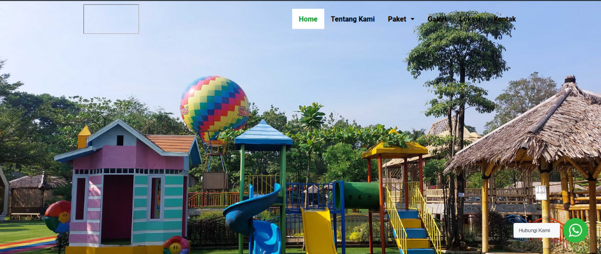
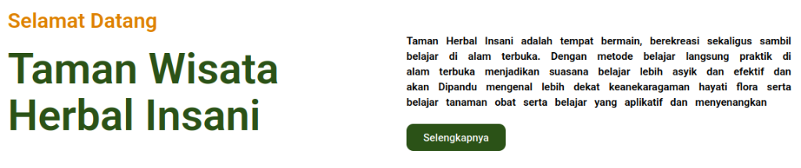
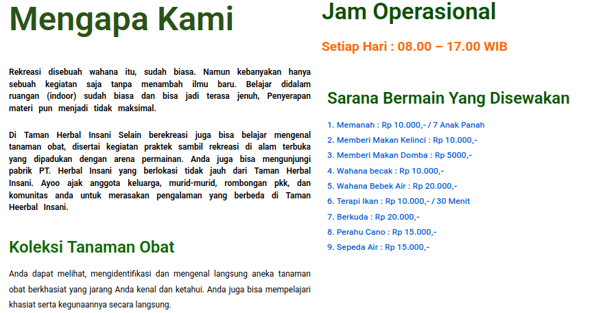
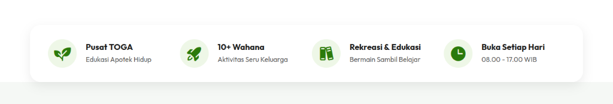
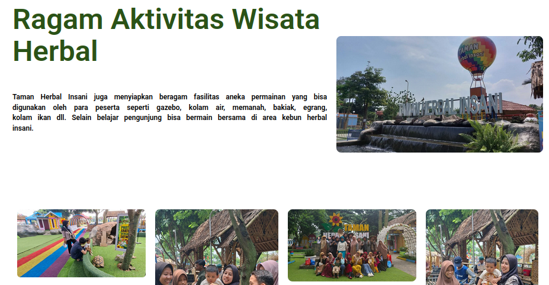
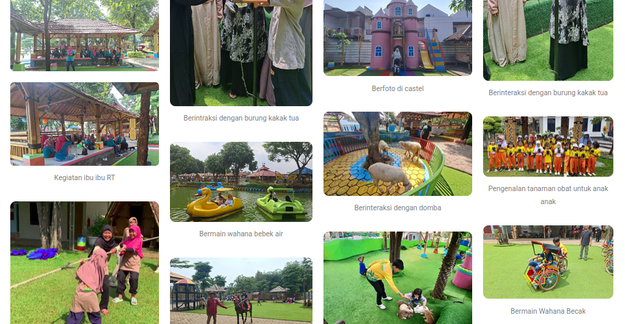
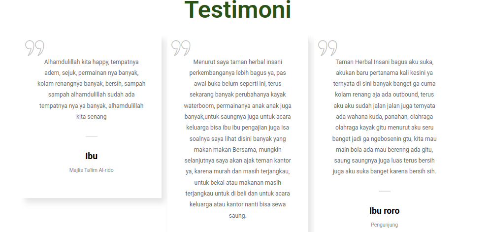
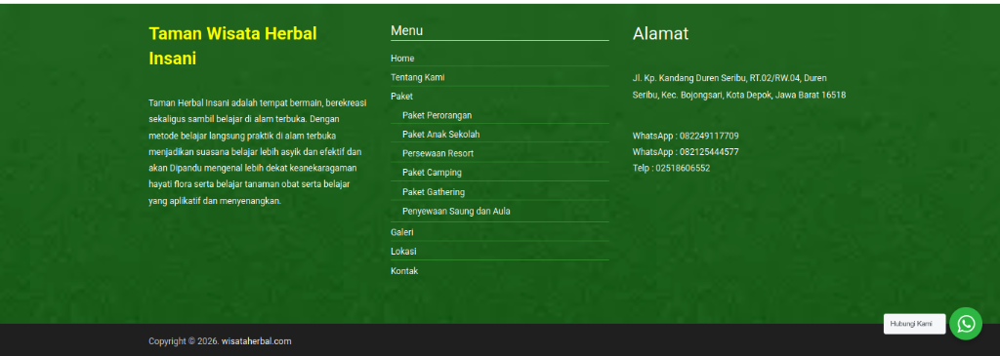

1. Header & Hero Section (Kesan Pertama)
Desain Lama

Kondisi Sebelumnya:
- Navigasi (*header*) berupa balok letak atas putih solid yang sangat kaku, logo tidak berbentuk, dan teks menu kurang mencolok.
- Foto latar belakang (*hero image*) dibiarkan mentah, *flat*, tanpa ada perlakuan warna / *overlay* sama sekali.
- Tidak ada judul, tidak ada teks, dan tidak ada tombol ajakan sama sekali! Pengunjung dibiarkan masuk rumah tanpa disambut dan bingung harus melakukan apa.

Pemecahan Masalah (After):
- Desain Immersive: Navigasi transparan bergaya kekinian yang seakan menyatu dengan gambar pemandangan di baliknya.
- Visual Dramatis: Penambahan *dark overlay mode* pada foto latar sehingga menonjolkan nuansa prestise, premium, dan sangat "hidup".
- Copywriting Bertaring: Hadirnya *Headline* (Judul Utama) besar yang membawa pesan inti *"Menghidupkan Warisan...*", disusul langsung oleh dua buah Tombol Kontras ganda (CTA) warna hijau & putih agar audiens langsung terarah untuk beli tiket atau tonton video.
2. Quick Stats & Mengapa Memilih Kami
Desain Lama


Kondisi Sebelumnya:
- Wall of Text: Blok "Selamat Datang" dan "Mengapa Kami" hanya berisi tumpukan paragraf panjang (dinding teks) yang sangat membosankan dan dijamin akan di-*skip* kursor oleh pembaca.
- Mubazir Spasi: Banyak sekali ruang kosong *(white space)* putih yang tidak didesain dengan baik, membuat *layout* terasa gersang dan amatir.
- Penyampaian harga sarana bermain hanya disajikan layaknya *bullet text* hyperlink biru mentah (menyerupai link rusak/MS Word).


Pemecahan Masalah (After):
- Floating Stats (Ikonik): Info esensial (seperti "Pusat TOGA", dan "Buka Setiap Hari") disajikan di dalam tabung kartu statistik melayang (*floating*) bersudut bulat dengan ikon yang memanjakan mata yang cepat dicerna dalam 3 detik.
- Grid Bento Premium: Paragraf "Mengapa Kami" dirangkum ulang (*rewriting*) menjadi kartu *(Bento Grid)* yang menyatukan latar foto aktivitas asri dengan balok-balok fitur solid putih.
- Tidak ada lagi paragraf membosankan; setiap informasi kini ditemani ilustrasi ikonografi hijau solid yang menegaskan standar ekowisata modern.
3. Aktivitas Pilihan & Spanduk Promo
Desain Lama


Kondisi Sebelumnya:
- Layout Berantakan: Susunan gambar kegiatan (*gallery grid*) yang ditaruh asal-asalan, memiliki rasio dan proporsi yang timpang satu sama lain, sehingga merusak kerapian mata memandang.
- Sangat pelit ruang putih; terlihat penuh sesak tanpa adanya struktur *margin* batas yang konsisten. Keterangan teks (*caption*) di bawah gambar pun terlihat terlalu kecil dan susah dibaca.
- Tidak ada titik fokus penjualan promosi sama sekali di dalam halaman tersebut yang menarik rombongan untuk membeli tiket sekunder.
4. Testimoni (Bukti Sosial)
Desain Lama

Kondisi Sebelumnya:
- Tipografi Sulit Dibaca: Kalimat testimoni menggunakan format *Center-Aligned* (Rata Tengah) dengan baris yang sangat panjang. Ini secara ergonomis melelahkan mata pembaca.
- Elemen Visual Standar: Hanya menggunakan ikon petik dua besar yang memakan tempat, tanpa ada indikator penilaian (rating) yang jelas.
- Kesan Kurang Personal: Nama pemberi testimoni diletakkan di bawah dengan gaya teks yang kaku, tanpa adanya aksen visual pemberi identitas (seperti inisial atau foto).
5. Footer & Bottom Navigasi
Desain Lama

Kondisi Sebelumnya:
- Kurangnya Hierarki: Penggunaan warna hijau cerah yang dominan dan teks putih tanpa variasi ukuran membuat footer terasa datar dan sulit untuk membedakan kategori informasi.
- Garis Pemisah (Border) Kaku: Menu dipisahkan dengan garis tipis horizontal yang memberikan kesan desain kuno (gaya web 2000-an).
- Copyright Terpisah Drastis: Bagian hak cipta menggunakan warna hitam pekat yang tidak selaras dengan tema hijau di atasnya, menciptakan patahan visual yang tidak estetis.